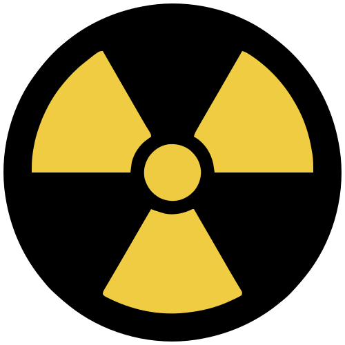
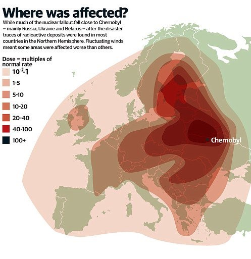
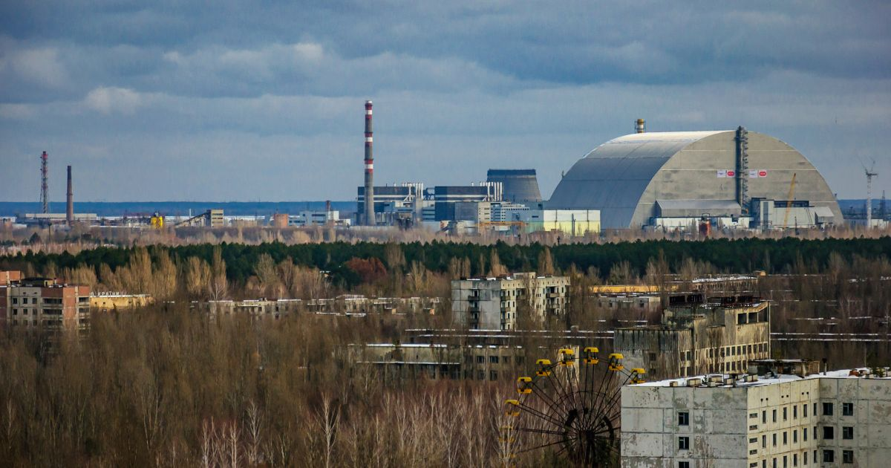
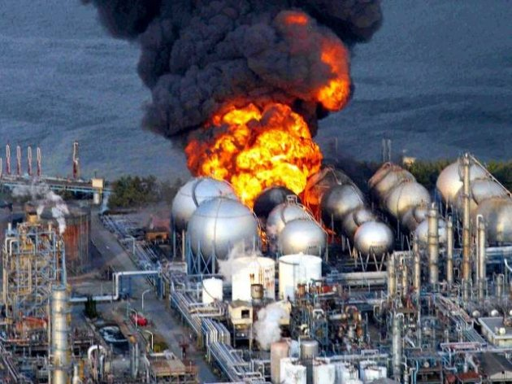
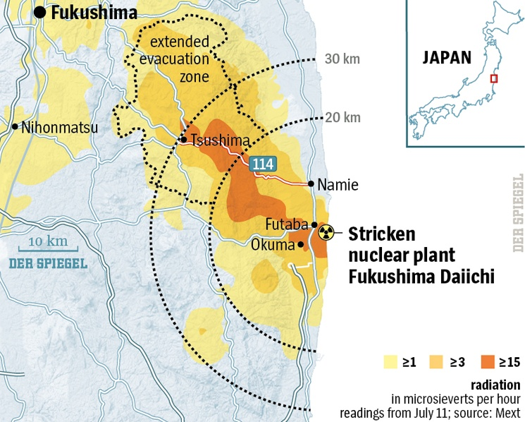

Nuclear power plants generate electricity using the heat produced by splitting atoms to create steam, which drives a turbine. No greenhouse gases are produced during the fission process itself, and only very small amounts are produced across the entire nuclear life-cycle. In 2018, nuclear power generated 10.5% of the world's electricity.
Like fossil-fuelled power plants, nuclear plants are highly reliable and can run for many months without interruption, providing large amounts of electricity regardless of time of day, weather, or season. Most nuclear power plants can operate for at least 60 years, which contributes to making nuclear electricity among the most affordable forms of generation over the long term.
Nuclear fuel can power a reactor for several years due to the immense amount of energy contained in uranium: one kilogram of uranium produces roughly the same amount of energy as one tonne of coal. As a result, nuclear power generates a correspondingly small amount of waste. On average, a reactor supplying one person's electricity needs for a year produces about 500 grams of waste, small enough to fit inside a soda can. Of that, only 5 grams is used nuclear fuel, roughly the equivalent of a sheet of paper. Several management strategies exist for used fuel, including direct disposal or recycling it in reactors to generate further low-carbon electricity.
Safety record
There have been only two major accidents in the history of civilian nuclear power where a large amount of radioactive material was released: Chernobyl (1986) and Fukushima Daiichi (2011). Their impact has been far less severe than commonly believed. Using a death toll estimate of 433 for Chernobyl and 2,314 for Fukushima, nuclear power's death rate per unit of electricity generated is comparable to that of solar and wind, and far below that of fossil fuels.
Studies, including those conducted by the World Health Organisation, have concluded that the radiation-related health effects of these accidents were very small. The main harm caused by nuclear accidents has come not from radiation exposure itself, but from the psychological and socio-economic consequences of evacuation, fear, and misconceptions about radiation, effects that could largely have been avoided.

Internationally, the symbol was first officially introduced through an ISO recommendation in 1963, and later formalized as the international standard ISO 361 — Basic Ionising Radiation Symbol — in 1974. This classic trefoil is still used today throughout the world's nuclear facilities, laboratories, hospitals and radioactive material transport vehicles.
Comparing energy sources
No energy source is entirely free of risk. Energy production can affect human health and the environment in three main ways: air pollution, accidents (in mining, extraction, transport, construction, or maintenance), and greenhouse gas emissions. Fossil fuels rank worst on all three counts, while nuclear and renewable sources rank consistently low.
To compare sources fairly, deaths are measured per terawatt-hour (TWh) of electricity generated, roughly the annual consumption of 150,000 EU citizens, accounting for deaths from both air pollution and supply-chain accidents.
Estimated death rates per TWh
- Coal 25
- Oil 18
- Gas 3
- Hydropower 1
- Wind 0.04
- Nuclear 0.03
- Solar 0.02
Hydropower's average is dominated by a single catastrophic event, the 1975 Banqiao Dam failure in China, which killed an estimated 171,000 people. Excluding it, hydropower's death rate falls to about 0.04 deaths per TWh, comparable to wind, nuclear, and solar.
Fossil fuels remain the deadliest energy source overall, primarily due to air pollution, which causes an estimated 8.7 million premature deaths every year. By contrast, nuclear energy results in 99.9% fewer deaths than brown coal, 99.8% fewer than coal, 99.7% fewer than oil, and 97.6% fewer than gas. Wind and solar are comparably safe. The minor differences among nuclear, wind, and solar are not statistically meaningful, given the uncertainty in these estimates; what matters is that all three are dramatically safer than fossil fuels.
It's also worth noting that fossil fuel death-rate estimates are likely conservative, since they are typically based on European power plants with strong pollution controls. More recent global research on air pollution suggests real-world health impacts, especially in regions with weaker pollution controls or power plants located closer to population centers, may be considerably higher than these figures indicate.
Clean and safe go together
There is no trade-off between the safest energy sources in the short term and the least damaging in the long term, they are the same sources. Coal is both the deadliest and the dirtiest, emitting over a hundred times more greenhouse gases per unit of electricity than nuclear. Oil and gas are also significantly worse than nuclear and renewables, though less so than coal.
Fossil fuels still account for around 60% of the global electricity mix. Transitioning away from them toward nuclear and renewable energy would reduce both deaths from accidents and air pollution and greenhouse gas emissions, delivering health benefits today alongside climate benefits for future generations.
Public perception of nuclear energy is heavily shaped by two highly visible accidents, Chernobyl and Fukushima, despite the fact that, measured against the millions who die from fossil fuel pollution each year, the actual death toll from nuclear power has been very low. Since nuclear power is also a major source of low-carbon electricity, it can play a key role in a sustainable energy mix alongside renewables.
Chernobyl
The most serious nuclear accident in history took place on 26 April 1986 at the Chernobyl nuclear power plant in Ukraine, then part of the Soviet Union. It remains the only nuclear accident in the history of commercial nuclear power to have caused fatalities from radiation. A combination of reactor design flaws and a poor safety culture led to a failed safety test, triggering two explosions and a fire that burned for over a week, releasing a large amount of radioactive material into the environment.
Two workers died as a direct result of the explosions. A further 28 emergency personnel and plant workers later died from acute radiation syndrome (commonly known as radiation sickness). The accident also caused approximately 5,000 cases of thyroid cancer, of which 15 have proven fatal; many of these cases could have been prevented by restricting the consumption of contaminated foodstuffs such as milk. Follow-up studies have found no increase in birth defects or hereditary effects, and no measurable rise in solid cancers beyond thyroid cancer.
Clean-up of the site and surrounding areas has continued ever since. A concrete shelter was built quickly after the accident to contain further releases of radioactive material. This structure was always intended as temporary and was eventually replaced by the New Safe Confinement, completed in July 2019.
The plant's three remaining reactors continued operating after the accident, with the last one shutting down in 2000.


Fukushima Daiichi
On 11 March 2011, the strongest earthquake ever recorded in Japan triggered a massive tsunami along the Pacific coast. The earthquake and tsunami together killed 19,729 people, with 2,559 still missing, and devastated communities across the country. Reactors near the earthquake's epicenter, including those at Fukushima, shut down automatically as designed.
However, the tsunami flooded and destroyed the backup generators at the Fukushima Daiichi plant, which were meant to keep cooling water circulating through the reactors. As a result, three reactor cores largely melted over the following three days, accompanied by several hydrogen explosions and the release of radioactive material into the environment.
The accident did not cause any radiation deaths or cases of radiation sickness. The United Nations Committee on the Effects of Atomic Radiation (UNSCEAR) concluded that no observable negative health effects from radiation are expected among the public. However, the mass evacuation of residents did cause harm: it led to deaths and suffering, particularly among elderly residents, as well as long-term psychosocial effects and stigmatization.


URANIUM PROCESSING
MINIG
A significant proportion of uranium is extracted through conventional mining methods: removing mineralized rock (ore) from the ground, breaking it up, and treating it to extract the minerals being sought. However, nearly 60% of the world's uranium is now mined using in-situ leaching, a method that avoids major ground disturbance. Water mixed with oxygen, or an alkali, acid, or other oxidizing solution, is circulated through the uranium ore to dissolve and extract the uranium. The resulting solution is pumped to the surface, then separated, filtered, and dried to produce uranium oxide concentrate, commonly known as "yellowcake."
PROCESSING
Most nuclear reactors use the uranium-235 isotope as fuel, but this isotope makes up only about 0.7% of natural uranium. To make it usable as fuel, the concentration of uranium-235 must be increased through a process called enrichment. The uranium is first converted into a volatile compound, uranium hexafluoride, then heated until it becomes a gas. In this gaseous form, it is spun at very high speeds inside tall, fast-rotating machines called centrifuges, which separate the lighter uranium-235 from the heavier uranium-238, increasing the proportion of uranium-235.
FUEL FABRICATION
The enriched uranium is sent to a fuel fabrication plant, where it is converted into uranium dioxide powder. This powder is pressed into small cylindrical pellets and heated to form a hard ceramic material. The pellets are then inserted into thin tubes called fuel rods, which are grouped together into fuel assemblies.
POWER GENERATION
Fuel assemblies are loaded into the reactor core, where they undergo a nuclear fission chain reaction that releases heat. This heat boils water into high-pressure steam, which turns a turbine to generate electricity. A single fuel assembly, usually several metres long, can remain in a reactor for years, generating large amounts of electricity.
STORAGE & DISPOSAL
Used fuel is highly radioactive and generates significant heat, so it must first be stored underwater to cool down. It can then either remain in water ("wet storage") or be moved into sealed containers kept in air-cooled buildings or on outdoor storage pads ("dry storage"). Allowing the fuel to cool and lose some radioactivity makes later recycling or disposal easier.
RECYCLING
Used nuclear fuel can be recycled to recover valuable materials such as uranium and plutonium. Before recycling, the fuel is stored for several years to allow its heat and radioactivity to decrease. Specialized facilities then separate reusable materials from waste, allowing them to be used in the production of new nuclear fuel. Through this process, around 96% of the material in used fuel can be recovered, while only a small portion remains as waste requiring long-term storage. Recycling helps reduce the volume of nuclear waste and makes better use of existing fuel resources.
Conclusion
Nuclear energy stands out as one of the safest and cleanest sources of electricity available today. Despite the lasting public impact of the Chernobyl and Fukushima accidents, the data show that nuclear power's death rate per unit of electricity generated is comparable to that of solar and wind, and dramatically lower than fossil fuels, which remain responsible for millions of premature deaths each year through air pollution alone.
Beyond its safety record, nuclear power offers high reliability, a small physical waste footprint, and a near-zero carbon emissions profile across its life-cycle. The process behind it, from uranium mining and enrichment to fuel fabrication and eventual disposal or recycling, is tightly regulated and engineered with multiple layers of safety in mind.
As the world continues its transition away from fossil fuels, nuclear energy, alongside renewable sources such as wind, solar, and hydropower, has an important role to play in building a cleaner, safer, and more sustainable energy future.